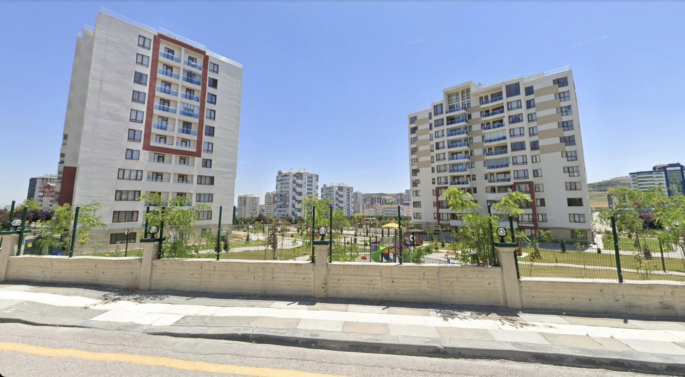
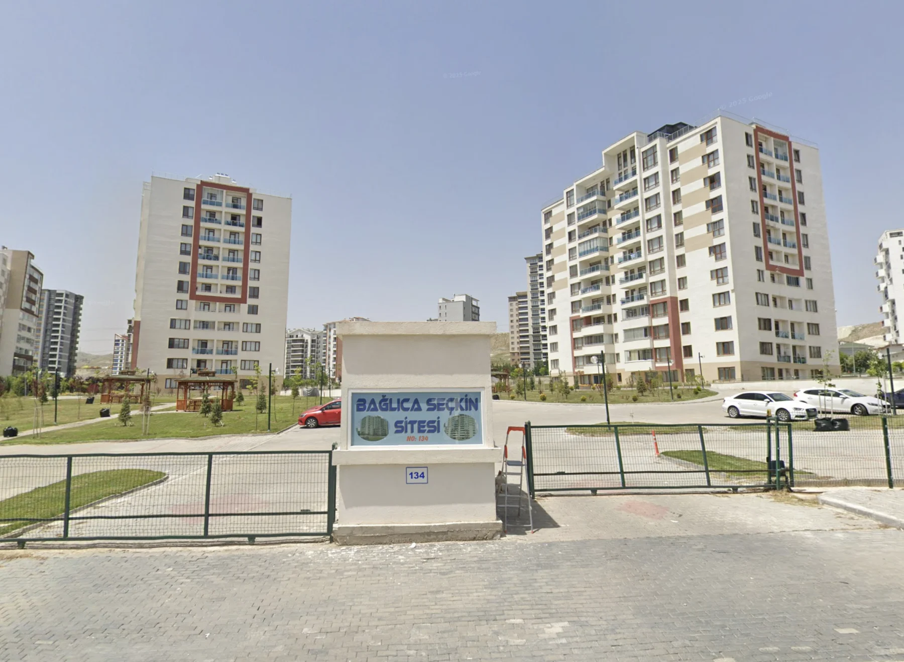

İki blok,
bir komşuluk.
Geniş bir arazi üzerinde konumlanan iki blokta ortak bir site yaşamı.

BAĞLICA · ANKARA
İki blok, geniş bir bahçe.
Komşuluğa ve hayata daha çok yer.
01 / SİTEMİZE HOŞ GELDİNİZ
Ankara’nın Etimesgut ilçesinde, Çambayırı Caddesi üzerindeyiz. Geniş bir araziye yayılan iki bloğumuz, açık alanları ve komşuluğa yer açan bahçesiyle aynı yaşamı paylaşıyor.
Basketbol sahasında hareketin, bahçede açık havanın tadını çıkarıyoruz. Her iki blokta bulunan kapalı otopark ise günlük yaşama kolaylık katıyor.
Mahallemizde yerinizi bulun ↗
SİTEMİZDE YAŞAM
Açık havada buluşmak, birlikte vakit geçirmek
ve günün sonunda evinize dönmek için.
Geniş bir arazi üzerinde konumlanan iki blokta ortak bir site yaşamı.
Blokların çevresinde yeşil alanlar, yürüyüş yolları ve açık havada dinlenme alanları.
Site içindeki basketbol sahasında spor ve birlikte geçirilen zaman.
İki bloğun da kapalı otoparkı sayesinde araçlarınız için kapalı park alanı.
KOMŞULARIMIZA ÖZEL
Site yaşamına dair bilgilere kolayca ulaşın.
02 / FOTOĞRAF GALERİSİ
İki bloktan bahçeye, sahadan site girişine.
Bağlıca Seçkin Sitesi’ni yakından tanıyın.
Google kaynaklı sokak görüntülerindeki tarihler ve mevcut görünüm farklılık gösterebilir. Görselleri büyüterek inceleyebilirsiniz.
03 / DUYURU PANOSU
Henüz yayınlanmış bir yönetim duyurusu bulunmuyor.
Güncel bilgilendirmeler paylaşıldığında bu alandan takip edebilirsiniz.
04 / KONUM & İLETİŞİM
Bağlıca Seçkin Sitesi
Bağlıca, Çambayırı Cd. No:134